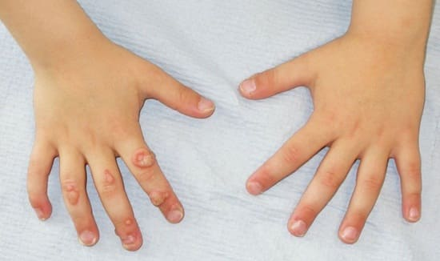
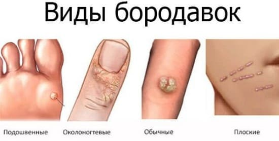

Бородавки — это очень распространенная инфекция кожи, с которой рано или поздно сталкивается практически каждый ребенок. Образование бородавок вызывает вирус, который попадает в глубокие слои кожи и приводит к тому, что клетки кожи утолщаются и формируют бородавки. У детей бородавки встречаются реже, чем у взрослых. Они могут появиться на любом участке кожи.
БОРОДАВКИ ОБЫЧНЫЕ
Бородавки обычные — это самый распространенный тип бородавок, встречающихся у детей. Они обычно появляются на пальцах, коленях, руках и локтях, маленькие (меньше сантиметра), выпуклые и часто имеют черные точки в центре.
ПОДОШВЕННЫЕ БОРОДАВКИ
Они похожи на обычные бородавки, но появляются на подошвах ступней и часто бывают большего размера. Из-за своего расположения могут причинять дискомфорт.
МОЛЛЮСКОВЫЕ БОРОДАВКИ
Они могут появиться на любом участке тела в виде маленьких (размером примерно с четверть карандашного ластика или даже меньше) упругих пузырьков с крошечными ямками в центре.
ЗАРАЗНЫ ЛИ БОРОДАВКИ
Да, но ребенок должен длительно и близко контактировать с бородавкой другого ребенка. Бородавка может перейти с одного участка тела на другой. Если ребенок трогает свою бородавку, существует большая вероятность того, что бородавки могут появиться и на других участках тела. Бородавки не передаются через обыденные случайные контакты.

ЛЕЧЕНИЕ
Бородавки практически всегда проходят сами по себе, но на это может понадобиться несколько лет. Бородавки часто удаляют, если они причиняют дискомфорт (как, например, подошвенные бородавки) или увеличиваются в размере. Есть несколько вариантов лечения.
Безрецептурные кислоты для выведения бородавок. Это может быть эффективно при маленьких бородавках, при условии, что эти средства наносятся регулярно. Тем не менее такое удаление бородавки может занять недели или месяцы. Обсудите с врачом использование для лечения безрецептурных средств, если бородавки находятся на лице или гениталиях.
Жидкий азот. Это самый распространенный метод лечения, применяемый в больницах. Жидкий азот замораживает бородавку, убивая вирус внутри нее. После лечения бородавка, как правило, отпадает в течение нескольких дней. Если бородавки большие и находятся глубоко под кожей, могут потребоваться 2—3 процедуры лечения жидким азотом. Эта процедура должна выполняться с большой осторожностью, поскольку побочные эффекты включают образование пузырей на прилегающих участках и появление шрама на месте замороженной бородавки.
СОВЕТ ДОКТОРОВ СИРС: КЛЕЙКАЯ ЛЕНТА СКЛЕИВАЕТ ВСЕ Эффективным домашним средством, которое мы рекомендуем пациентам для лечения бородавок, является использование клейкой ленты. Этот метод зачастую дает результат, хотя для этого может потребоваться от 6 недель до 3 месяцев. Поговорите со своим врачом, прежде чем применить его. 1. Смочите бородавку теплой водой в течение 10—15 минут, затем удалите наружные слои кожи бородавки. 2. Затем наклейте маленький кусочек клейкой ленты на бородавку; используйте лейкопластырь или бумажный скотч для того, чтобы его закрепить. Если ваш ребенок ежедневно принимает ванну, вы можете использовать водостойкий пластырь. 3. Через 3 дня удалите клейкую ленту и повторите шаг 1, смачивая бородавку теплой водой в течение 10—15 минут, а затем приклейте клейкую ленту снова, как описано в шаге 2, и оставьте ее там еще на несколько дней. Повторяйте эту процедуру в течение нескольких недель, и бородавка должна постепенно исчезнуть. Запомните, эффект может появиться только через месяц. Поговорите с врачом, если бородавка не проходит или увеличивается, несмотря на лечение. |
Лазерное лечение. Если бородавки не выводятся с помощью замораживания или продолжают появляться снова, несмотря на применение жидкого азота, следующим шагом может стать лазерное лечение. Эту процедуру должен выполнять дерматолог, прошедший соответствующее течение.
Бородавки, как правило, просто доставляют дискомфорт, и не более того. Обратитесь к врачу, если бородавка не проходит при лечении без рецептурными препаратами или есть бородавки находятся на лице, возле ногтей или в области половых органов. Также следует незамедлительно обратиться к врачу, если кажется, что в бородавку попала инфекция.
Здоровье ребенка от докторов Сирс / Сирс У. и др.